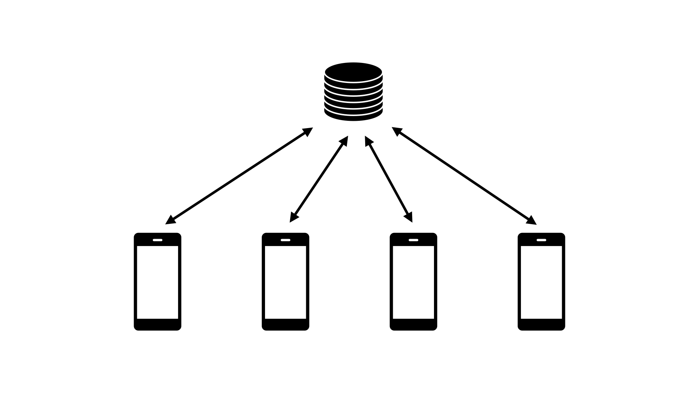
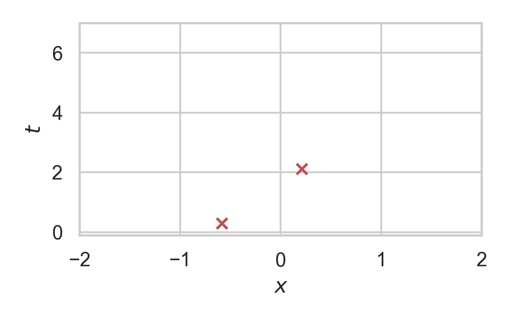
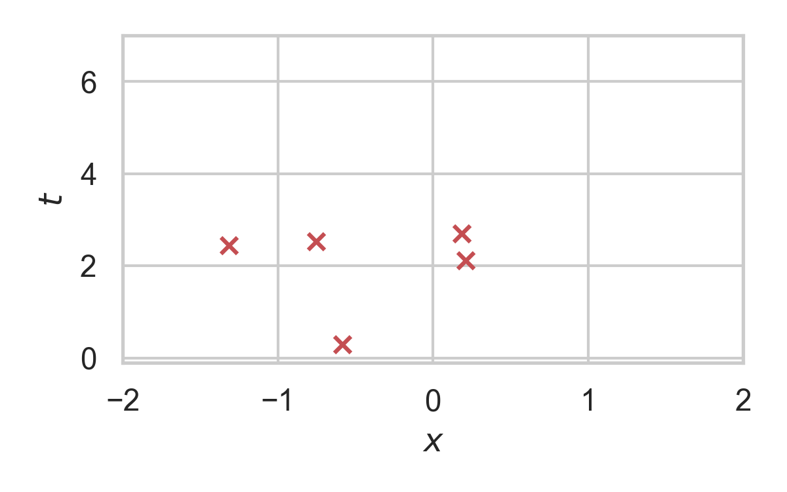
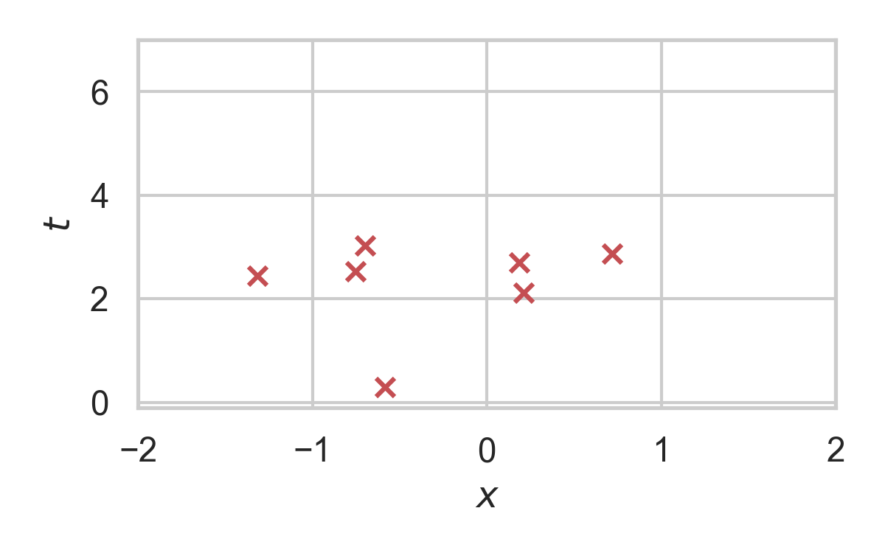
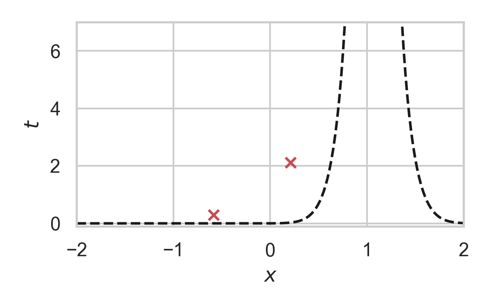
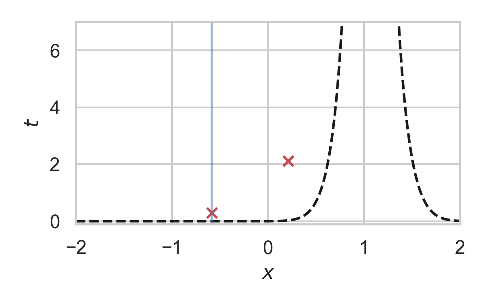

Data Compression with Relative Entropy Coding
Gergely Flamich
06/10/2025
gergely-flamich.github.io
In Collaboration With


what is data compression?
lossless compression
- Source: \(x \sim P_x\)
- Code: \(C_P(x) \in \{0, 1\}^*\)
- Decode: \[ C_P^{-1}(C_P(x)) = x \]
- Measure of efficiency:
- Rate: \(\mathbb{E}[\vert C_P(x) \vert]\)
lossy compression
- Encode: \(C_P(x) \in \{0, 1\}^*\)
- Decode: \[D_P(C_P(x)) = \hat{x} \approx x\]
- Measures of efficiency:
- Rate: \(\mathbb{E}[\vert C_P(x) \vert]\)
- Distortion: \(\mathbb{E}[\Delta(x, \hat{x})]\)
the usual implementation
- Quantizer \(Q\)
- Source dist.: \(\hat{P} = Q_\sharp P\)
- Lossless source code \(K_{\hat{P}}\)
Scheme:
\[ C_P = K_{\hat{P}} \circ Q \]
\[ D_P = K_{\hat{P}}^{-1} \]
transform coding

Usual transform: \(Q(f(x))\)
what is relative entropy coding?
as a lossy compression mechanism
üí° Idea: perturb instead of quantise
- Source: \(x \sim P_x\)
- Shared randomness: \(z \sim P_z\)
- Code: \(C_P(x, z) \in \{0, 1\}^*\)
- Decode: \[ D_P(C_P(x, z), z) \sim P_{y \mid x}\]
implementing uniform relative entropy coding
Dithering identity
\(c \in \mathbb{R}, U, U' \sim \mathrm{Unif}(-1/2, 1/2)\):
\[ \lfloor c + U \rceil - U \sim c + U' \]
Common randomness: \(z = U\)
Encode \(K = \lfloor c + U \rceil\)
implementing general relative entropy coding
Communication Complexity
Use \(\mathbb{H}[y \mid z]\) as proxy for rate. Li and El Gamal:
\[ I[x; y] \leq \mathbb{H}[y \mid z] \leq I[x; y] + \log(I[x; y] + 1) + \mathcal{O}(1) \]
❌ not tight!
why care?
learned transform coding
can use reparameterisation trick!
realistic lossy compression

Right-hand image from Careil et al. [1]
differentially private federated learning
Relative entropy coding using Poisson processes
Poisson Processes
- Collection of random points in space
- Focus on spatio-temporal processes on \(\mathbb{R}^D \times \mathbb{R}^+\)
- Exponential inter-arrival times
- Spatial distribution \(P_{X \mid T}\)
- Idea: use process as common randomness in REC
Example with \(P_{X \mid T} = \mathcal{N}(0, 1)\)

Example with \(P_{X \mid T} = \mathcal{N}(0, 1)\)

Example with \(P_{X \mid T} = \mathcal{N}(0, 1)\)

Example with \(P_{X \mid T} = \mathcal{N}(0, 1)\)

Example with \(P_{X \mid T} = \mathcal{N}(0, 1)\)

Example with \(P_{X \mid T} = \mathcal{N}(0, 1)\)

Example with \(P_{X \mid T} = \mathcal{N}(0, 1)\)

Example with \(P_{X \mid T} = \mathcal{N}(0, 1)\)

Rejection Sampling
- Sampling algorithm for target distribution \(Q\).
- Using proposal \(P\)
- Bounded density ratio \(dQ/dP\)
Rejection Sampling

RS with \(P = \mathcal{N}(0, 1), Q = \mathcal{N}(1, 1/16)\)

RS with \(P = \mathcal{N}(0, 1), Q = \mathcal{N}(1, 1/16)\)

RS with \(P = \mathcal{N}(0, 1), Q = \mathcal{N}(1, 1/16)\)

RS with \(P = \mathcal{N}(0, 1), Q = \mathcal{N}(1, 1/16)\)

RS with \(P = \mathcal{N}(0, 1), Q = \mathcal{N}(1, 1/16)\)

RS with \(P = \mathcal{N}(0, 1), Q = \mathcal{N}(1, 1/16)\)

RS with \(P = \mathcal{N}(0, 1), Q = \mathcal{N}(1, 1/16)\)

RS with \(P = \mathcal{N}(0, 1), Q = \mathcal{N}(1, 1/16)\)

RS with \(P = \mathcal{N}(0, 1), Q = \mathcal{N}(1, 1/16)\)

RS with \(P = \mathcal{N}(0, 1), Q = \mathcal{N}(1, 1/16)\)

RS with \(P = \mathcal{N}(0, 1), Q = \mathcal{N}(1, 1/16)\)

RS with \(P = \mathcal{N}(0, 1), Q = \mathcal{N}(1, 1/16)\)

Greedy Poisson Rejection Sampling
Motivation

Fact: \((x, y) \sim \mathrm{Unif}(A) \, \Rightarrow\, x \sim P\)
Can we do the same with Poisson processes?
Yes!
GPRS with \(P = \mathcal{N}(0, 1), Q = \mathcal{N}(1, 1/16)\)

GPRS with \(P = \mathcal{N}(0, 1), Q = \mathcal{N}(1, 1/16)\)

GPRS with \(P = \mathcal{N}(0, 1), Q = \mathcal{N}(1, 1/16)\)

GPRS with \(P = \mathcal{N}(0, 1), Q = \mathcal{N}(1, 1/16)\)

GPRS with \(P = \mathcal{N}(0, 1), Q = \mathcal{N}(1, 1/16)\)

GPRS with \(P = \mathcal{N}(0, 1), Q = \mathcal{N}(1, 1/16)\)

GPRS with \(P = \mathcal{N}(0, 1), Q = \mathcal{N}(1, 1/16)\)

Codelength of GPRS

Runtime of GPRS

Problem: \(\Vert r \Vert_\infty \geq 2^{D_{KL}[Q \,\Vert\,P]}\)
Fast GPRS with \(P = \mathcal{N}(0, 1), Q = \mathcal{N}(1, 1/16)\)

Fast GPRS with \(P = \mathcal{N}(0, 1), Q = \mathcal{N}(1, 1/16)\)

Fast GPRS with \(P = \mathcal{N}(0, 1), Q = \mathcal{N}(1, 1/16)\)

Fast GPRS with \(P = \mathcal{N}(0, 1), Q = \mathcal{N}(1, 1/16)\)

Fast GPRS with \(P = \mathcal{N}(0, 1), Q = \mathcal{N}(1, 1/16)\)

Fast GPRS with \(P = \mathcal{N}(0, 1), Q = \mathcal{N}(1, 1/16)\)

Codelength of fast GPRS
Now, encode search path \(\nu\).

Runtime of fast GPRS

This is optimal.
Fundamental Limits
The width function
\(Q \gets P_{y \mid x}, P \gets P_y\)

\(w_P\) is a probability density!
representing divergences
KL divergence:
Channel simulation divergence:
\[ D_{CS}[Q || P] = h[H] \]
\[ D_{KL}[Q || P] \leq D_{CS}[Q || P] \]
tight lower bound

behaviour of the lower bound

- A: \(P = \mathcal{L}(0, 1)\), \(Q = \mathcal{L}(0, b)\)
- B: \(P = \mathcal{N}(0, 1)^{\otimes d}\), \(Q = \mathcal{N}(1, 1/4)^{\otimes d}\)
asymptotic lower bound

Computationally Lightweight ML-based data compression
Data Compression with INRs

Image from Dupont et al. [4]
- computationally lightweight
- short codelength
COMBINER
COMpression with Bayesian Implicit Neural Representations

Image from Blundell et al. [7]
üí°Gradient descent is the transform!
COMBINER

COMBINER

Take-home messages
- Relative entropy coding is a stochastic alternative to quantization for lossy source coding
- Analysed selection sampling-based REC algorithms
- Greedy Poisson rejection sampling is an optimal selection sampler
- Implicit neural represenations are an exciting, compute-efficient approach to data compression with huge potential
Open questions
- Fast Gaussian REC
- "Achievability" theorem for channel simulation divergence
- Practical implementation of common randomness
References I
- [1] Careil, M., Muckley, M. J., Verbeek, J., & Lathuilière, S. Towards image compression with perfect realism at ultra-low bitrates. ICLR 2024.
- [2] C. T. Li and A. El Gamal, “Strong functional representation lemma and applications to coding theorems,” IEEE Transactions on Information Theory, vol. 64, no. 11, pp. 6967–6978, 2018.
References II
- [4] E. Dupont, A. Golinski, M. Alizadeh, Y. W. Teh and Arnaud Doucet. "COIN: compression with implicit neural representations" arXiv preprint arXiv:2103.03123, 2021.
- [5] G. F., L. Wells, Some Notes on the Sample Complexity of Approximate Channel Simulation. To appear at Learning to Compress workshop @ ISIT 2024.
- [6] D. Goc, G. F. On Channel Simulation with Causal Rejection Samplers. To appear at ISIT 2024
References III
- [7] C. Blundell, J. Cornebise, K. Kavukcuoglu and D. Wierstra. Weight uncertainty in neural network. In ICML 2015.